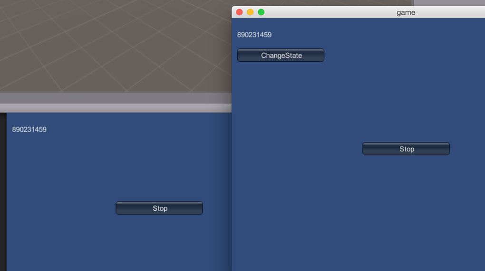

开篇需要先介绍一个 UNet 系统里面提供的一个类，名字叫做 NetworkBehaviour。看到名字，不禁让人想起 MonoBehaviour。NetworkBehaviour 继承自 MonoBehaviour，所以基于 NetworkBehaviour 的脚本也是能挂在 GameObject 上面的。
NetworkBehaviour 给我们提供了什么功能呢？大概是如下几点：
- Synchronized Variables
- Network callbacks
- Server and Client functions
- Sending Commands
- Client RPC Calls
- Networked Events
为了让描述更准确，上面采用了 官方手册 中的英文描述。这篇的主角就是 Synchronized Variables。
SyncVar 初见
我们在接下来把 Synchronized Variables 简称为 SyncVar 。我们先给它来下个粗略的定义：
它是 NetworkBehaviour 的一个带有 [SyncVar] 属性的字段
注意定义中 SyncVar 是字段，不是属性。示意代码大概是这个样子：
public class SpaceShip : NetworkBehaviour
{
[SyncVar]
public int health;
[SyncVar]
public string playerName;
}
上面代码中带有两个 SyncVar。
当 SyncVar 发生改变时，UNet 会从 Server 端向所有有效的 Client 端发送这些改变。注意这里的方向，是从 Server 到 Client ，而不是从 Client 到 Server 的方向。
SyncVar 数据类型
既然 SyncVar 是字段，字段是有数据类型的。UNet 中这样规定：
- 可以是 所有基本数据类型，比如 string，int，float，bool 等
- 可以是 结构数据，比如 Vector3 等
- 不可以是 类、列表、集合
大概就是 值类型可以，引用类型不可以。当然大部分情况下是这样，特殊情况是存在的。除了 String 这个特殊的
引用类型除外，下面会介绍。
那就是疑问了，既然不能是列表和集合，那如果真要同步一组数组怎么办？
UNet 提供了一些特殊的类，称之为 SyncList, 这些类是:
- SyncListString
- SyncListFloat
- SyncListInt
- SyncListUInt
- SyncListBool
他们都继承自 SyncList<T> 泛型类。当然内建类型有局限性，不能满足所有需求，所以 UNet 还给我们提供
了 SyncListStruct<T> 泛型类，我们可以通过定义它的子类来扩展，从而达到我们的需求。下面是一个 SyncListStruct<T> 的例子：
public class MyScript : NetworkBehaviour
{
public struct POW
{
public int pow;
public float f;
}
public class SyncListPOW : SyncListStruct<POW>
{
}
public SyncListPOW m_pows = new SyncListPOW();
}
注意到没有？上面的 m_pows 字段并没有 [SyncVar] 属性。这里有一点非常重要，SyncList 类型 的字段，不需要带上 [SyncVar] 属性。这下子，上面给出的定义要改改了。
SyncVar 定义
让我们来重新给 SyncVar 下定义：
它是 NetworkBehaviour 中的一个字段， 如果
- 它的类型是基本类型或结构，则需要带上 [SyncVar] 属性
- 它的类型继承自 SyncList
或者 SyncListStruct ，则不需要带上 [SyncVar] 属性
代码示例
Demo 可以再这里找到：https://github.com/wudixiaop/UNet/tree/master/Assets/105%20-%20Sync%20Var
SyncVar 相关代码如下：
using UnityEngine.Networking;
using UnityEngine;
public class SyncVarSample : NetworkBehaviour
{
[SyncVar]
string State = "Init State";
private void ChangeState()
{
State = Random.Range(0, int.MaxValue).ToString();
}
void OnGUI()
{
GUI.Label(new Rect(10, 20, 120, 24), State);
// 因为 UNet 是以 Server 为主导的系统，只有在 Server 端改变值才能起作用
//
if (isServer)
{
if (GUI.Button(new Rect(10, 56, 160, 24), "ChangeState"))
{
ChangeState();
}
}
}
}
需要将上面脚本挂到 Spawn Prefab 上面（Spawn Prefab详细参照上一篇文章）。
将 Demo 程序 build 之后，单独运行 build 出来的程序，并启动 Server。在 Unity 编辑器中运行程序，连接 Server。 我们会得到如下截图的样子。

我们每次点击 ChangeState 按钮，左上角的数字就会发生变化。Server 改变了 State 字段的值，Client 端也对应发生改变。
这篇就到这里。Enjoy!